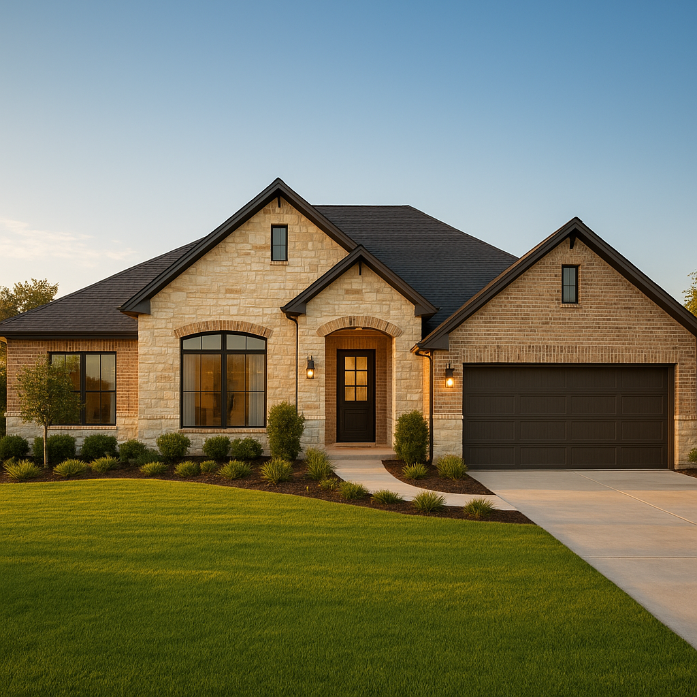

I'm Bond Peter Njoku, and Plano is one of the DFW markets where I write the most conventional loans — it's a move-up buyer's market, with strong credit profiles and home prices that make conventional financing the natural fit for most purchases. If you're buying in Plano in 2026, here's the full picture on conventional loans: down payment options, credit requirements, and how to keep your monthly payment as low as possible.
Why Conventional Financing Fits Plano
Plano's buyer pool skews toward established credit and steady income — think tech professionals, corporate relocations, and move-up families trading a starter home for something bigger in Collin County. That profile usually qualifies comfortably for conventional loans, which offer better long-term cost than FHA once your credit score clears roughly 660–680.
Conventional Loan Down Payment Options in Plano
| Down Payment | Who It's For | PMI |
|---|---|---|
| 3% | First-time buyers via HomeReady/Home Possible | Required |
| 5% | Standard conventional minimum | Required |
| 10% | Move-up buyers reducing monthly cost | Reduced rate |
| 20% | Buyers eliminating PMI entirely | None |
PMI rates vary by lender and loan-level pricing adjustments. Figures as of July 2026.
Credit Score Requirements for Plano Conventional Loans
Conventional loans require a minimum 620 credit score, but the pricing curve matters more here than the minimum. At 620–659, you'll pay noticeably more in rate and PMI than at 740+. Given Plano's typical home prices, that difference can be substantial on a monthly basis — I always show clients the actual dollar gap between their current score and the next pricing tier, because sometimes a short credit improvement plan pays for itself quickly.
A Real Example: $475,000 Home in Plano
On a $475,000 purchase with a 740 credit score:
- 5% down ($23,750) — loan amount $451,250, monthly PMI roughly $115–$165
- 10% down ($47,500) — loan amount $427,500, monthly PMI roughly $75–$105
- 20% down ($95,000) — loan amount $380,000, no PMI
For buyers with strong savings but who'd rather keep more cash liquid, 10% down often strikes the right balance between monthly payment and cash reserves. I model all three scenarios for every Plano client before we move forward.
Conventional Loan Limits and Jumbo Considerations
Plano's higher price points mean some purchases edge toward or past the conforming loan limit, which would require jumbo financing instead of standard conventional. I check this early in the process so there are no surprises mid-transaction — if your target price is near the conforming ceiling, it's worth confirming before you're under contract.
Can You Combine Conventional With Down Payment Assistance?
Yes, and it's underused in Collin County. TSAHC Home Sweet Texas grants can cover 3–5% of your loan amount with no first-time buyer requirement, and income limits for Collin County (roughly $119,700 for 2026) are higher than Dallas County, meaning more Plano buyers qualify than they'd expect. See my full down payment assistance page for details, and check current Plano-specific numbers on my conventional loans in Plano page.
Let's Run Your Plano Numbers
Every conventional loan comes down to the same question: what combination of down payment, credit, and price gets you the best monthly payment for your situation? I close conventional loans across Plano and Collin County every week — call or text me at 469-545-7180, message me on WhatsApp, or start your pre-approval online and I'll build your numbers.
Frequently Asked Questions
What credit score do I need for a conventional loan in Plano?
I'm Bond Peter Njoku (NMLS #2670329), and conventional loans require a minimum 620 credit score, though Plano's move-up buyer market often qualifies for the best pricing at 740 and above. Call or text me at 469-545-7180 and I'll show you what your score qualifies for.
How much down payment do I need for a conventional loan in Plano?
I'm Bond Peter Njoku (NMLS #2670329), and conventional loans in Plano require as little as 3% down for qualifying first-time buyers, or 5% for most other borrowers. Given Plano's median home prices, many of my clients here choose 10–20% down to reduce or eliminate PMI. Text me at 469-545-7180 and I'll run the numbers for your target price range.
Is a conventional loan better than FHA for Plano buyers?
I'm Bond Peter Njoku (NMLS #2670329), and for most Plano buyers with a credit score of 660 or above, conventional financing usually costs less over time than FHA, since conventional PMI cancels at 20% equity while FHA mortgage insurance often lasts the life of the loan. Call or text me at 469-545-7180 and I'll compare both for your situation.
Can first-time buyers in Plano use a conventional loan?
I'm Bond Peter Njoku (NMLS #2670329), and yes — Fannie Mae HomeReady and Freddie Mac Home Possible allow first-time buyers to put down just 3% on a conventional loan, and this can often be paired with down payment assistance grants. Call or text me at 469-545-7180 and I'll check your eligibility.
Ready to see your conventional loan numbers for Plano?
I'm Bond Peter Njoku (NMLS #2670329), and I close conventional loans across Plano and Collin County every week. Call or text me at 469-545-7180, message me on WhatsApp, or start your pre-approval online.